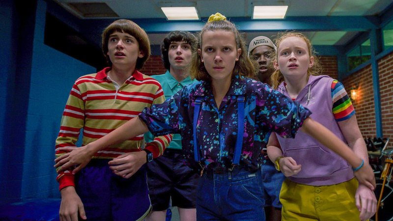
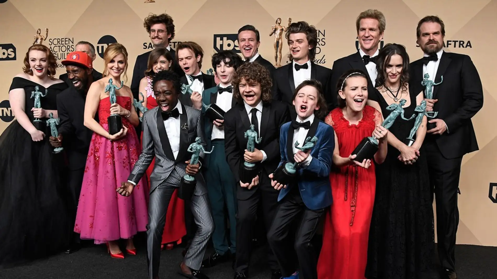

Stranger Things: ¿Qué pasa en Hawkins?
Stranger Things es una aclamada serie de televisión que fusiona elementos de ciencia ficción, horror y nostalgia de los años 80. Creada por los hermanos Duffer, la trama se desarrolla en el pequeño pueblo ficticio de Hawkins, donde un grupo de niños se embarca en una búsqueda desesperada para encontrar a su amigo desaparecido, Will Byers. Mientras lo buscan, se topan con Eleven, una niña con habilidades psíquicas y un misterioso laboratorio gubernamental que realiza experimentos secretos. La serie evoca reminiscencias de clásicos del cine y la literatura, como Stephen King y Steven Spielberg, con su narrativa convincente y personajes entrañables.

El elenco de "Stranger Things" está liderado por jóvenes talentos como Millie Bobby Brown, Finn Wolfhard, Gaten Matarazzo, Caleb McLaughlin y Noah Schnapp. Estos actores han recibido elogios por sus interpretaciones convincentes y química en pantalla. Además, la serie cuenta con actores veteranos como Winona Ryder y David Harbour, quienes aportan profundidad y experiencia al elenco.
La ambientación de la serie es una parte integral de su atractivo. La estética ochentera se refleja no solo en la moda y la música, sino también en la cinematografía y los elementos visuales. Los directores de fotografía capturan hábilmente la esencia de la década, sumergiendo a los espectadores en un mundo retro lleno de referencias culturales.
"Stranger Things" ha recibido numerosos premios y reconocimientos por su impacto en la cultura popular y su calidad narrativa. Desde premios del Sindicato de Actores hasta múltiples nominaciones a los premios Emmy, la serie ha demostrado ser un fenómeno televisivo. La mezcla única de misterio, emoción y nostalgia ha conquistado a audiencias de todas las edades en todo el mundo.
Con cuatro exitosas temporadas, y una quinta pendiente, "Stranger Things" ha dejado una marca indeleble en la televisión contemporánea. Su capacidad para equilibrar la intriga sobrenatural con las relaciones humanas ha resonado tanto entre críticos como entre el público, consolidándola como una de las series más queridas y exitosas de la era moderna.
Tráiler oficial
Datos sobre la Serie
- Año de Lanzamiento: 2016
- Creadores: Matt Duffer, Ross Duffer
- Género: Ciencia ficción, Terror, Drama
- Creado por: Hermanos Duffer
- Protagonistas: Winona Ryder, David Harbour, Finn Wolfhard, Millie Bobby Brown, Gaten Matarazzo, Caleb McLaughlin, Sadie Sink, Natalia Dyer, Charlie Heaton, Cara Buono, Matthew Modine, Noah Schnapp, Joe Keery, Dacre Montgomery, Sean Astin, Paul Reiser, Maya Hawke, Priah Ferguson, Brett Gelman, Linda Hamilton.
- Tema principal: "Stranger Things Main Theme" (compuesto por Michael Stein y Kyle Dixon)
- Compositor(es): Michael Stein y Kyle Dixon
- Ambientación: Años 1980
- País de origen: Estados Unidos
- Idioma original: Inglés
- Nº de temporadas: 4 (actualmente)
- Premios: Ganadora de múltiples premios, incluyendo premios SAG y premios MTV.
- Puntuación IMDb: 8.7 / 10